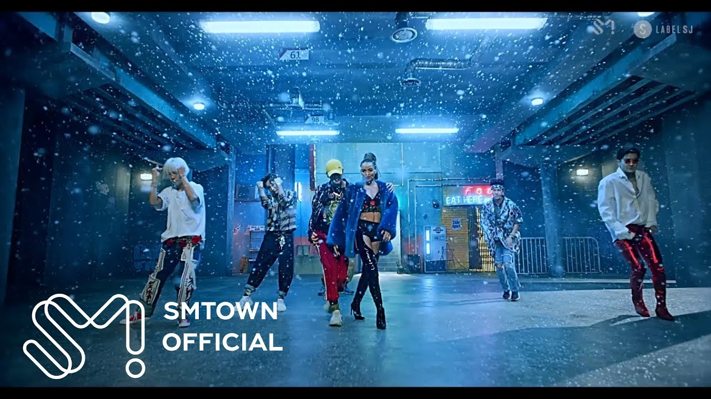

MV · SMTOWN 官方 YouTube
歌曲
Lo Siento
Super Junior · 第8张正规改版专辑 'REPLAY' · 2018.04.12
Lo Siento
(feat. Leslie Grace)
Super Junior · 第8张正规改版专辑 'REPLAY' · 2018.04.12
- 韩·英·西三语歌词 + Leslie Grace 合作。登上 Billboard Latin Digital Song Sales 第13位，为 K-pop 首次进榜。
- 发行 8 天后开启 Super Show 7 中南美巡演（布宜诺斯艾利斯·利马·圣地亚哥·墨西哥城），合作歌手与制作人登上当地舞台。
 TIC TICMV · NMIXX · 数字单曲
TIC TICMV · NMIXX · 数字单曲